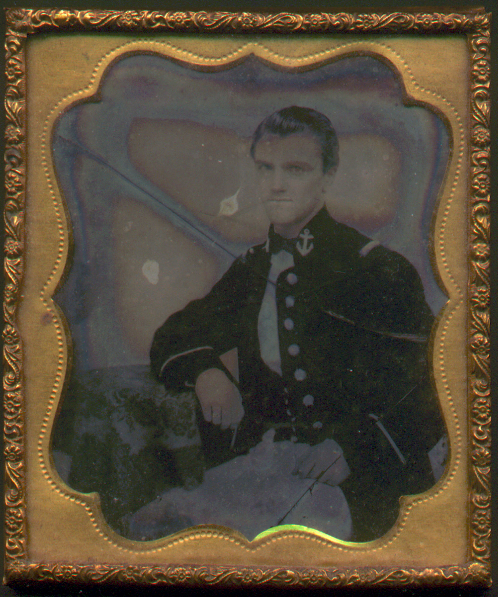
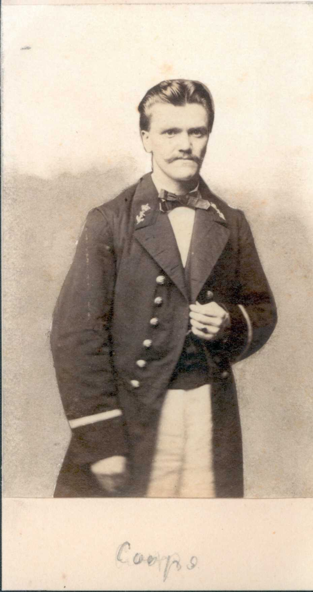
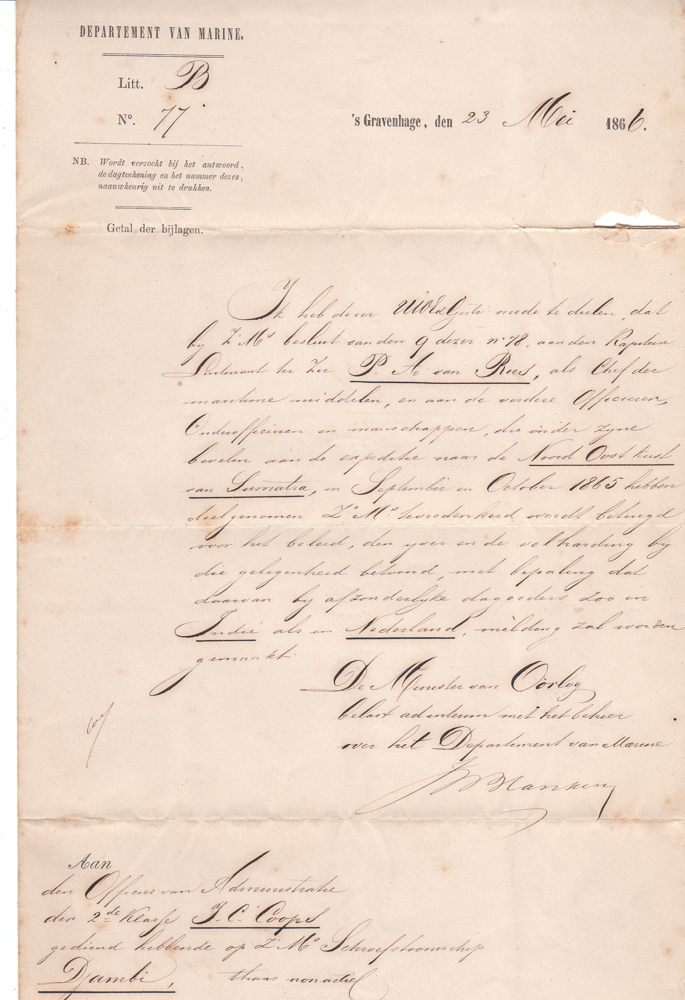
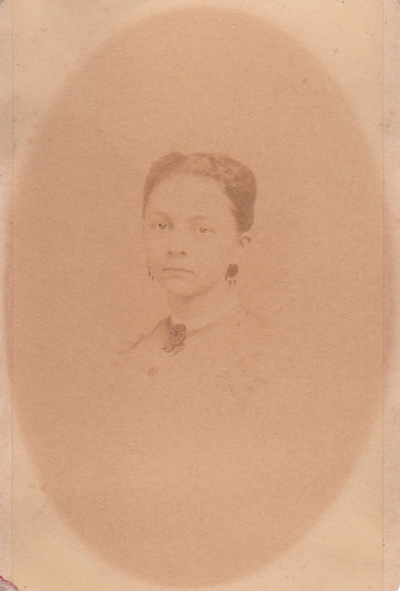
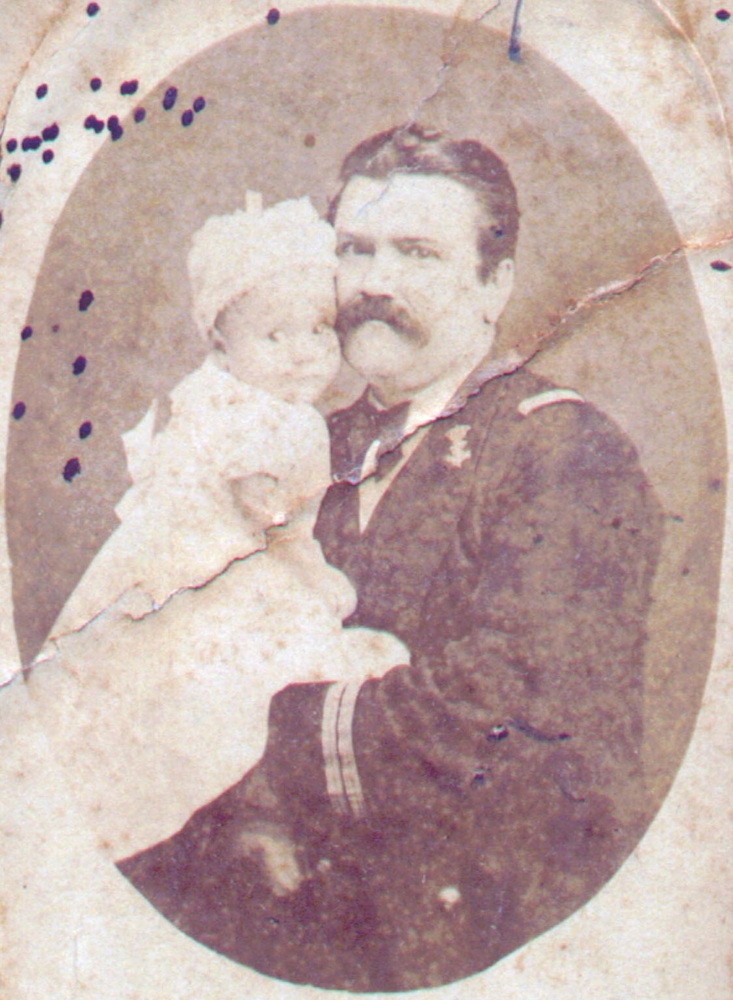
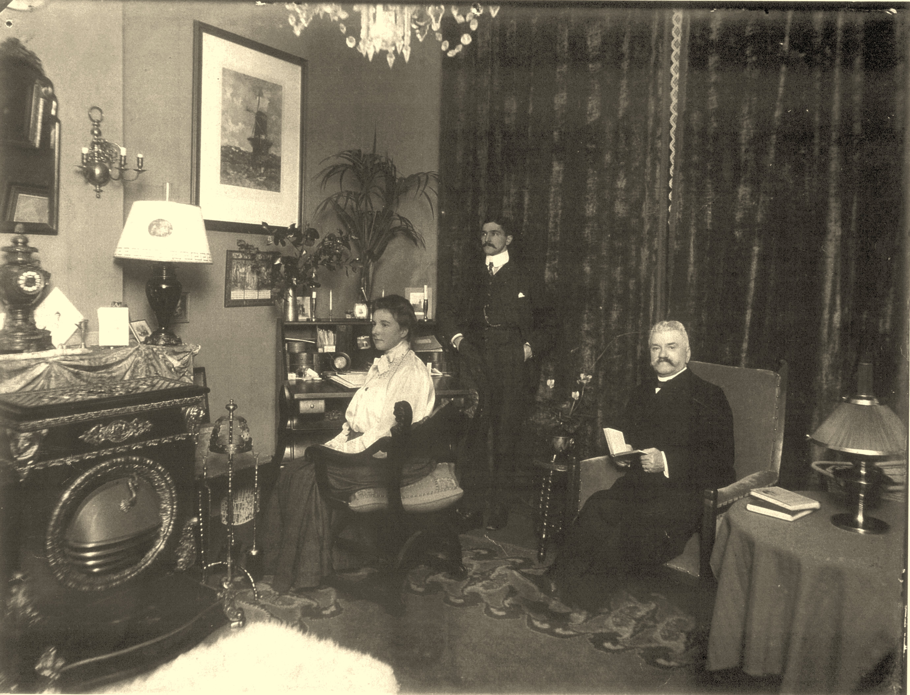
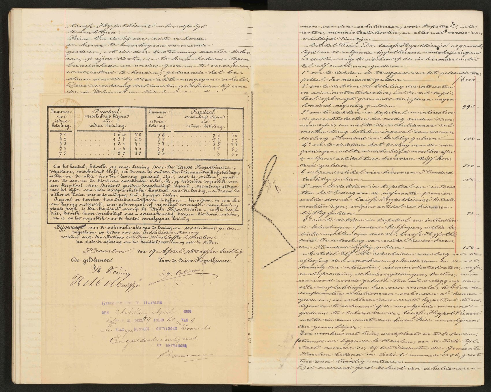
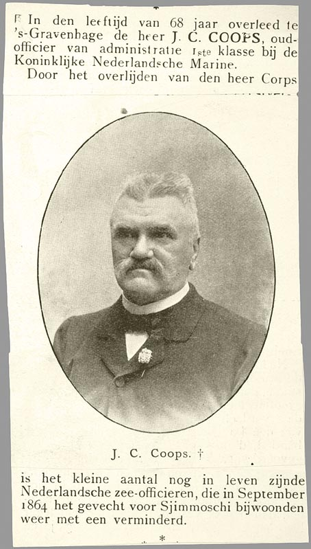
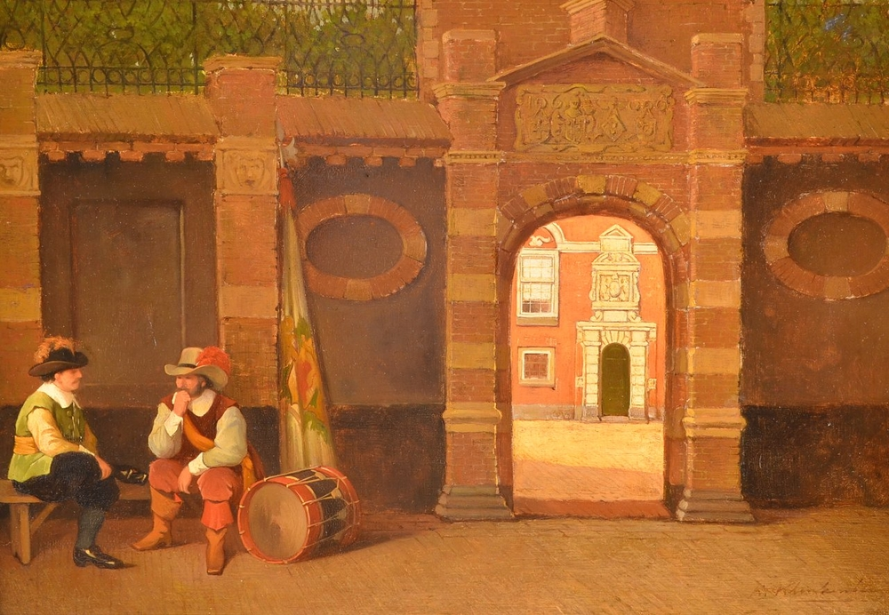
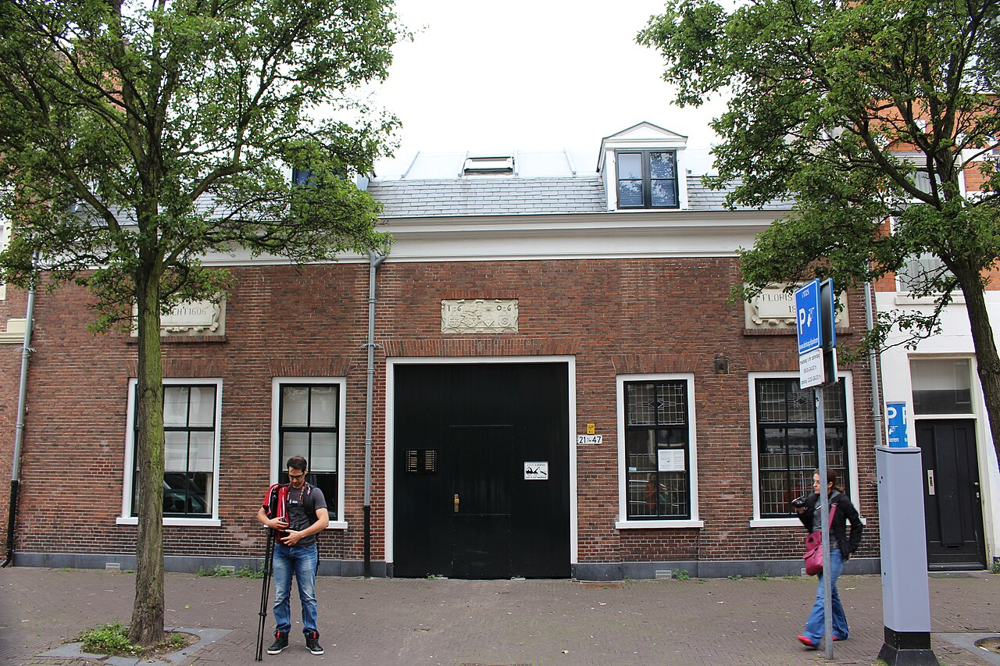

Biografieën · Koninklijke Marine
Jan Christian Coops
Van scheepsklerk tot officier van administratie
Jan Christian Coops (1838–1906) ging op zijn vijftiende bij de marine. Zijn staat van dienst volgt hem van de eerste reizen naar Nederlands-Indië tot Shimonoseki en zijn latere dienst aan wal. Na zijn marinepensioen werd hij directeur van de Nederlandse agentschappen van een Brusselse hypotheekmaatschappij. Een huwelijksverklaring en foto’s uit het familiearchief laten ook zijn leven met Johanna Elisabeth Kakebeeke zien.
Deel een foto, brief of herinnering
01 / Staat van dienst
Op vijftienjarige leeftijd bij de marine
Jan Christian werd op 13 februari 1838 in Doetinchem geboren als zoon van Peter Coops en Geertrui Wilhelmina Sophia Kindermann. Op 1 mei 1853 werd hij benoemd tot scheepsklerk bij de Nederlandse marine. Zijn naam stond de volgende dag in het Algemeen Handelsblad, tussen die van zes andere benoemde klerken. [1] [2]
In mei 1855 vermeldde de Rotterdamsche Courant hem als scheepsklerk op het stoomschip Amsterdam, dat op 10 mei uit het Nieuwediep naar Nederlands-Indië was vertrokken. Het stamboek noemt zijn overplaatsing naar het fregat Prins Frederik der Nederlanden in 1856. In 1859 volgde zijn bevordering tot officier van administratie derde klasse en in 1862 tot de tweede klasse. Zijn rang geeft aan dat hij tot de administratieve dienst aan boord behoorde. [1] [2] [8]


Lees de oorspronkelijke inschrijving
De staat van dienst heeft afzonderlijke kolommen voor aanstellingen, reizen, gevechten en bijzonderheden.
Naar de scan bij het Nationaal Archief · Bekijk de scan uit het familiedossier
02 / Aan boord van de Djambi
Shimonoseki en de noordoostkust van Sumatra
De Djambi deed op weg naar Batavia ook Australië aan. De Sydney Morning Herald berichtte op 27 mei 1863 over de aankomst vanuit Melbourne en nam de staflijst op. De krant noemt bij de functie purser een Coops met afwijkende initialen. De staat van dienst plaatst Jan Christian in die periode op de Djambi. [1] [8]
In september 1864 diende Coops aan boord van het schroefstoomschip Djambi tijdens de internationale aanval op de kustversterkingen van de vorst van Nagato. Nederlandse, Britse, Franse en Amerikaanse eenheden traden gezamenlijk op in de Straat van Shimonoseki. In 1865 bood koning Willem III het schip een vlag aan als blijk van waardering voor zijn aandeel. Die vlag wordt bewaard in het Rijksmuseum. [1] [3]

De Djambi komt ook terug in een brief van het Departement van Marine van 23 mei 1866. De brief is gericht aan J.C. Coops, officier van administratie tweede klasse. Hij kreeg daarmee bericht van de koninklijke waardering voor de officieren en manschappen die in september en oktober 1865 deelnamen aan de koloniale expeditie naar de noordoostkust van Sumatra onder P.A. van Rees. [4]


Zijn dienst in Japan kreeg een vervolg. De Provinciale en Overijsselsche Zwolsche Courant kondigde op 17 juni 1868 aan dat het schroefstoomschip Marnix per 1 juli in dienst zou komen met bestemming Japan, met J.C. Coops als officier van administratie tweede klasse. Die plaatsing komt ook in zijn staat van dienst voor. [1] [8]
Op de familiesite staat een afzonderlijk artikel over de gebeurtenissen in de Straat van Shimonoseki.
03 / Familiearchief
Een huwelijk in Goes
Op 23 juli 1873 trouwde Jan Christian in Goes met Johanna Elisabeth Kakebeeke. De door de burgemeester afgegeven huwelijksverklaring vermeldt dat hij 35 jaar was en zij 29. Johanna was in Goes geboren op 21 oktober 1843 als dochter van Jacobus Pieter Kakebeeke en Leyntje Johanna Pieternella Vader. [5] [6]



Het echtpaar kreeg drie kinderen. Geertruijda Wilhelmina Sophia werd in 1874 in Doetinchem geboren. Jacobus Pieter en Margot volgden in 1875 en 1876 in Den Helder. De familieaantekeningen over Johanna’s erfdelen noemen onder meer landbouwgrond bij Wolphaartsdijk en een huis aan de Koninginnegracht in Den Haag. Zo bleef Zeeland ook na haar huwelijk deel van de familiegeschiedenis. [6]
Bekijk de huwelijksverklaring uit Goes.





04 / De laatste dienstjaren
Administrateur en docent in Willemsoord
Op 1 april 1871 werd Coops bevorderd tot officier van administratie eerste klasse. Het onderwijsverslag over 1873–1874 vermeldt dat hij J.C.L.K. van Welij opvolgde als administrateur bij het Koninklijk Instituut voor de Marine in Willemsoord. In het verslag over 1876–1877 staat dat Coops ook les ging geven in militair recht. Per 1 september 1878 werd hij eervol ontheven van de administratie van het instituut. J.C. Coeland volgde hem op. [1] [9]
Het familiearchief bewaart een brevet van 6 december 1873 voor het onderscheidingsteken XV wegens langdurige dienst als officier. In een brief van 15 november 1878 kreeg hij toestemming het cijfer per 6 december te vervangen door XX. Per 1 juli 1879 ging hij op eigen verzoek met pensioen wegens gezondheidsklachten die volgens het besluit in en door de dienst waren ontstaan. Zijn jaarlijkse pensioen bedroeg 2.000 gulden. [1] [10]


05 / Na de marine
Het gezin in Den Haag
Ook na zijn pensioen komt Coops in de krant voor. Het Algemeen Handelsblad vermeldde op 18 augustus 1884 dat J.C. Coops het secretariaat van de Haagse instelling Floralia wilde neerleggen vanwege een drukke werkkring. De commissie bereidde op dat moment een plantententoonstelling in sociëteit De Vereeniging voor. [11]
Directeur bij de Caisse Hypothécaire
Na zijn marinepensioen werd Jan Christian directeur van de Nederlandse agentschappen van de Brusselse Caisse Hypothécaire. In een volmacht van 31 december 1884 noemt de Brusselse directeur Émile Dansaert hem al in die functie. Met die volmacht verscheen Coops op 16 februari 1885 voor notaris Willem Karel Loeff in Haarlem. Hij vertegenwoordigde de maatschappij bij een lening van 18.000 gulden aan meestertimmerman Cornelis Kesteloo. Vier woningen aan de Schotersingel dienden als onderpand. [12]
Op 9 april 1885 trad Coops bij dezelfde notaris op namens de maatschappij bij een hypotheeklening van 6.000 gulden aan loodgieter Hendrik Koning en zijn echtgenote. De akte vermeldt zowel zijn directeursfunctie als zijn vroegere rang van officier van administratie eerste klasse bij de Koninklijke Nederlandse Marine. Op de bijgevoegde aflossingsstaat staat zijn handtekening. [12]


Ook in 1889 en 1890 komt Coops in Haagse hypotheekzaken voor. In het register van notaris Pieter Cato Louis Eikendal staat dat hij toestemming gaf om enkele hypotheekinschrijvingen gedeeltelijk door te halen. Het register verwijst voor zijn hoedanigheid naar de volledige akten. [13]
Een raadsstuk uit 1889 noemt Jan Christian als oud-officier en Johanna als eigenares van het huis aan de Koninginnegracht 7. De grond was gemeentelijke erfpacht. Jan Christian vroeg namens haar om die te mogen kopen. Het gemeenteverslag vermeldt vervolgens de verkoop aan haar voor 1.677,80 gulden. [11]

Johanna overleed op 13 september 1904 in Den Haag. Jan Christian overleed daar op 17 februari 1906, vier dagen na zijn 68e verjaardag. Volgens de familiegenealogie werd hij op 21 februari begraven op de Algemene Begraafplaats in Den Haag. [6]


06 / Haags regentschap
Het Hofje van Floris van Dam
In 1606 kwam aan de Juffrouw Idastraat een liefdadigheidshofje tot stand uit de nalatenschap van de Haagse schout Floris van Dam. Het bood huisvesting aan oudere vrouwen met weinig middelen. Een landelijk verslag over het armbestuur vermeldt dat het hofje in 1903 bestemd was voor twaalf vrouwen. [14]



Voor de aanleg van de Prinsestraat moest het hofje wijken. In de jaren 1880 verhuisde de stichting naar de Lange Beestenmarkt, op de plek van een eerder luthers hofje. De gevelsteen uit 1606 kreeg daar een plaats in de straatgevel. Het complex met de regentenkamer is een gemeentelijk monument. [14]


.JPG){kind=link}
Jan Christian als regent
Op 22 oktober 1888 benoemde de in Tiel wonende regent Gerard Cornelis Schonck hem bij notariële akte tot mederegent. De akte noemt Jan Christian als gepensioneerd marineofficier, wonend aan de Koninginnegracht 7. Hij nam het werk onbezoldigd op zich. Na het overlijden van Schonck bestuurde hij de stichting samen met Henriëtta Elisabeth Kooijker-Bervoets. [15]
Jan Christian bleef tot zijn overlijden in 1906 regent. Het verslag van de stichting roemde zijn zorg voor de bewoonsters. Zijn zoon Jacobus Pieter Coops volgde hem op. De benoeming was op 1 december 1905 al notarieel vastgelegd. [15]
Verantwoording
Bronnen en beeldmateriaal
- Nationaal Archief, Stamboeken Marinepersoneel, toegang 2.12.14, inv. 64, staat van dienst nr. 31, scans 0066 en 0067. Gelezen aan de hand van de scans in het familiearchief.
- Algemeen Handelsblad, 2 mei 1853, bericht over de benoeming van scheepsklerken. Bredasche Courant, bericht over de benoeming tot officier van administratie derde klasse. De Noordbrabanter, 1862, bericht over de bevordering tot de tweede klasse. Krantenscans uit het familiedossier.
- Rijksmuseum, Scheepsvlag van de ‘Djambi’ en collectiedossier over Shimonoseki.
- Departement van Marine, brief aan J.C. Coops, Den Haag, 23 mei 1866, litt. B, nr. 77. Scan uit het familiearchief Coops–Kakebeeke.
- Burgerlijke stand Goes, huwelijksverklaring voor Jan Christiaan Coops en Johanna Elisabeth Kakebeeke, 23 juli 1873. Scan uit het familiearchief Coops–Kakebeeke.
- Genealogie Familie Coops, XI.87 en XII.105. Familiedossier Coops en Kakebeeke, met aantekeningen over Johanna’s afkomst en de verdeling van de nalatenschappen.
- Portretten en familiefoto’s uit het familiearchief Coops–Kakebeeke. De verwijzing naar Het Scheepvaartmuseum en het jaartal 1864 komen uit de eerdere familiebiografie.
- Rotterdamsche Courant, 17–18 mei 1855, bemanning van de Amsterdam. The Sydney Morning Herald, 27 mei 1863, p. 4, aankomst van de Djambi. Provinciale en Overijsselsche Zwolsche Courant, 17 juni 1868, plaatsingen op de Marnix.
- Verslag van den staat der hooge-, middelbare en lagere scholen, rubriek Koninklijk Instituut voor de Marine, 1873–1874, 1876–1877 en 1878–1879. De bijlagen in het familiedossier bevatten de vermeldingen op respectievelijk pdf-bladen 72, 118 en 178.
- Departement van Marine, brevet XV, 6 december 1873, en brief over XX, 15 november 1878, litt. B, nr. 35. Familiearchief Coops–Kakebeeke.
- Algemeen Handelsblad, 18 augustus 1884, bericht over Floralia. Gemeenteraad ’s-Gravenhage, Bijlagen van de Handelingen, 1889, nr. 343, p. 83, en gemeenteverslag, pp. 24–25, afschriften in het familiearchief. Overlijdensknipsel met portret, krant en publicatiedatum onbekend.
- Noord-Hollands Archief, toegang 1972, inv. 386, notaris Willem Karel Loeff te Haarlem. Akte nr. 2540 van 16 februari 1885, met volmacht van 31 december 1884. Akte nr. 2602 van 9 april 1885, met ondertekende aflossingsstaat. De oorspronkelijke scans zijn geraadpleegd.
- Haags Gemeentearchief, toegang 0373-01, inv. 2516, repertoire van notaris Pieter Cato Louis Eikendal. Nr. 1014, 21 januari 1889 en nr. 1681, 5 april 1890.
- Monumentenzorg Den Haag, Lange Beestenmarkt 21 t/m 47. Monumenten in Nederland. Zuid-Holland, Den Haag. Verslag van de verrichtingen aangaande het armbestuur over 1903.
- W.J.C. Coops, Groot Zande. Het huis, zijn bewoners en entourage in de Achterhoek (2011), onderdeel Hofje of Fundatie Floris van Dam. Daarin staan afschriften van regentenverslagen en de benoemingsakte van 22 oktober 1888. Zie ook het Haagse notarisregister van 1 december 1905.